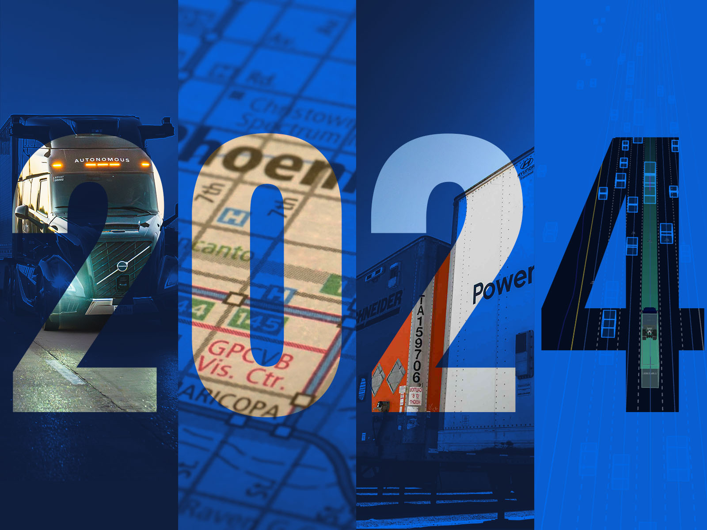
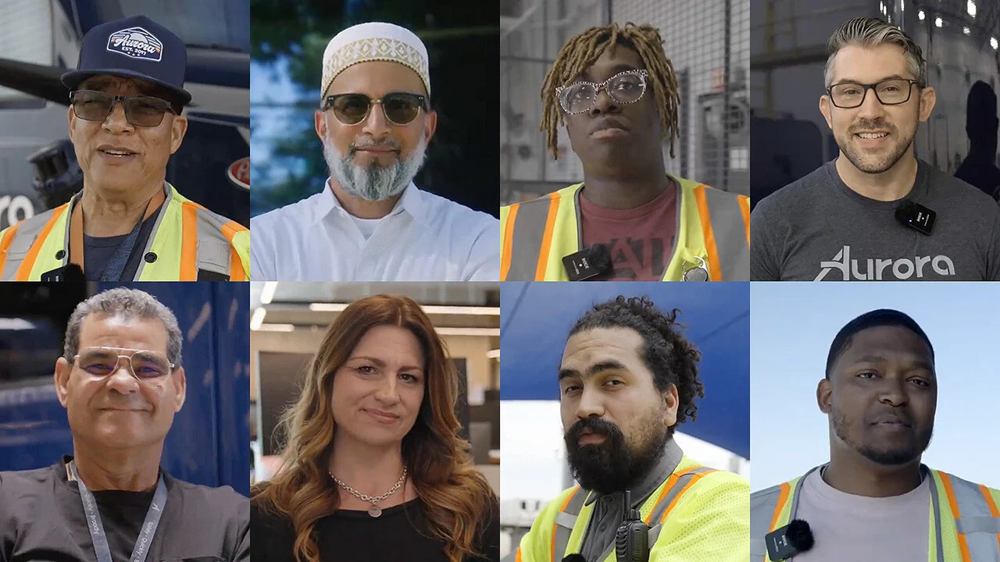
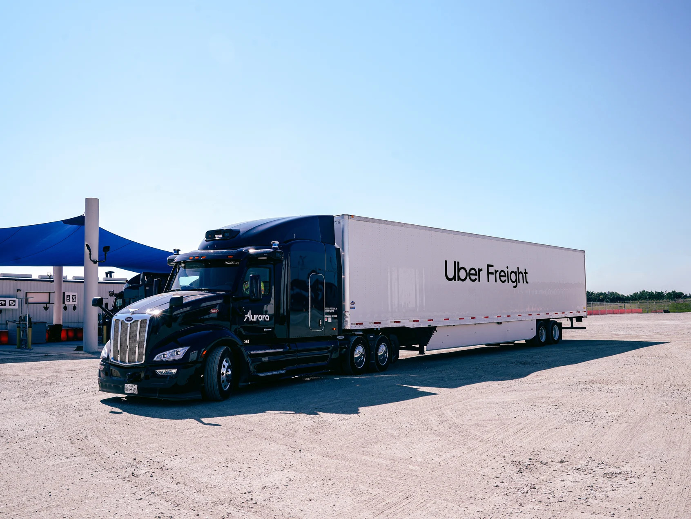
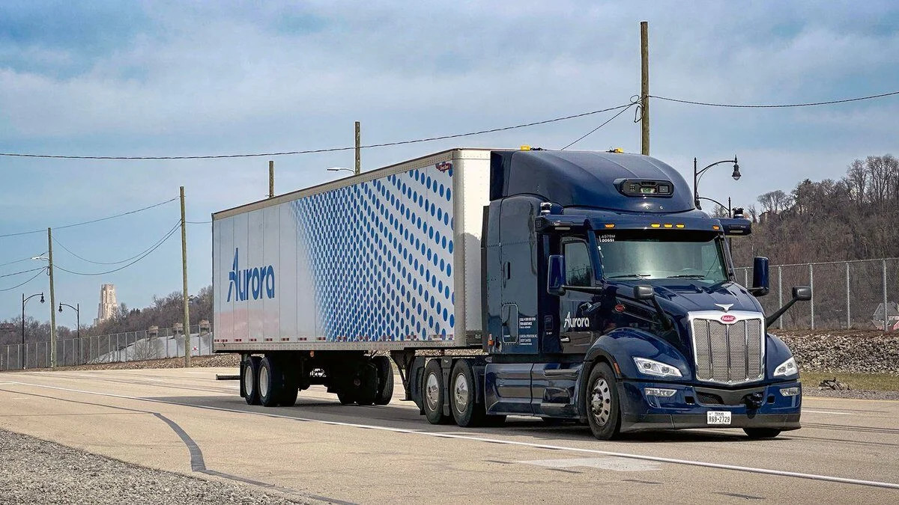
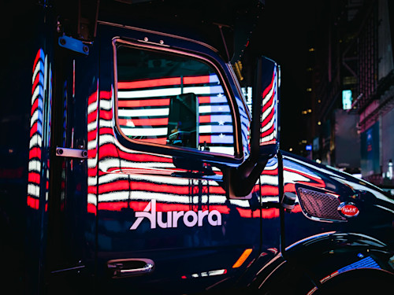
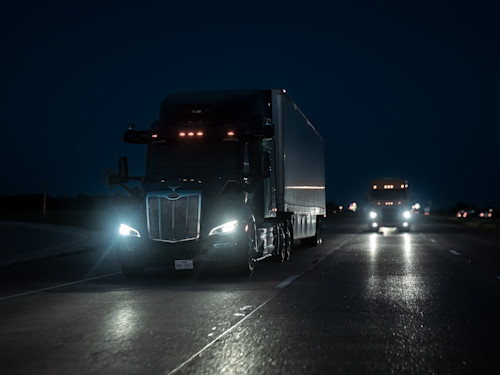
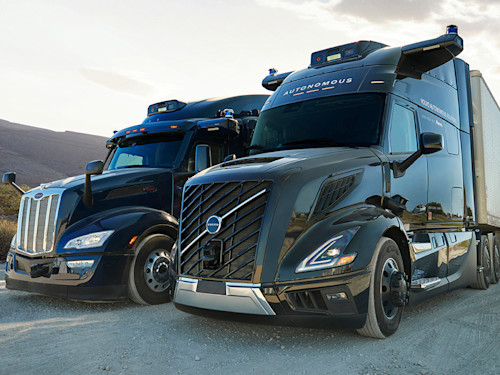

2024年は、Auroraにとって実り多い一年でした。パートナーや顧客とともに重要なマイルストーンを達成し、2025年4月に予定している自動運転トラックサービスの商業ローンチへ向けて着実に前進しました。今年の最大の成果と誇り高き瞬間を振り返ってみましょう。


Auroraにとって、安全はとても個人的なことです。ドライバーレスローンチの準備にあたり、最初のルートであるダラス〜ヒューストン間の自動運転トラック製品に関する安全ケースは、（10月時点で）97%完了しています。残り100%到達に必要なのは、いくつかの市街地走行能力の検証（計画上、意図的に後半のフェーズに組み込まれていたもの）、まれに発生する工事区間への対応、そして車両に関する一部の要件確認です。
私たちの言葉を鵜呑みにする必要はありません——私たちの安全アプローチは、安全試験・検査・認証分野における世界的リーダーであるTÜV SÜDによる監査を受け、見事合格しました。

Uber Freight、Schneider、Hirschbachをはじめとする輸送企業が商業ドライバーレスサービスへの契約を締結し、この画期的な技術を採用した最初の貨物輸送会社となりました。
Uber Freightとの取り組みでは、業界初となる「プレミア・オートノミー・プログラム（Premier Autonomy Program）」を導入しました。これは2030年までにUber Freightのキャリア向けに10億マイルを超えるドライバーレス走行枠を確保するものです。現在の顧客ラインナップにより、ローンチ時の想定稼働容量はすでに全て契約済みとなっています。

記者、安全担当官、規制当局、投資家を招き、ドライバーなしでAurora Driverが重要な安全マニューバを実行する様子を公開しました。緊急車両への対応、死角から飛び出す歩行者への素早い反応、タイヤのバーストへの対処など、様々なシナリオを披露しました。参加者たちはドライバーレストラックへの乗車を初めて体験しました。これにより、「ドライバーレス車両に乗ったことがある」と言えるのはオバマ元大統領だけではなくなりました！

ダラス〜ヒューストンのローンチルートに向けた準備において、テキサス州では万全の態勢が整っています！テキサス州の規制はドライバーレストラックの展開への明確な道筋を示しており、「ローン・スター州（テキサス州の別名）」の高い貨物輸送量はビジネス拡大に最適な環境です。
米国での展開を計画するにあたり、多くの州が自動運転トラックの安全性と効率性向上を歓迎していることを嬉しく思います。
顧客にとって価値あるサービスを提供するため、私たちは顧客が最も必要とするルートの開拓に集中しています。年次パートナーサミットでは、2025年にフォートワース〜フェニックス間の新ルートでドライバーレス運行を開始する計画を発表しました。実際、エルパソ〜フェニックス間の約900マイルの往復ルートを最近マッピングし、Aurora Driverが初めての自律走行を実施——たった2週間で、ほぼ介入なしで完走しました。

信頼性が高く冗長性を持つ自動運転車両を大規模に展開するには、エコシステムパートナーとの協力が不可欠だと考えています。クラス8トラックには1万以上の部品が使われており、大量生産に必要な冗長性を確保するためには、トラックメーカーやサプライヤーとの緊密な連携が欠かせません。
5月には、Volvo Autonomous Solutionsが「Volvo VNL Autonomous powered by Aurora Driver」をデビューさせました。これらのトラックはバージニア州のVolvo New River Valley Plantで製造されており、テキサス州にあるAuroraのターミナル間でDHL向けの貨物を自律的に輸送しています。また、当社のPACCAR Peterbilt 579と並行して稼働しています。
OEMパートナーとの協業に加え、ティア1製造パートナーであるContinentalとの連携も着実に進んでいます。Continentalは来年（2025年）に産業化されたAurora Driverハードウェアキットのプロトタイプテストを開始する予定で、2027年の量産化を目指しています。

ウォール街の大手機関投資家から4億8,300万ドルの資金を調達し、2026年以降の事業継続を確保しました。これはAuroraが価値あるサービスを届け、貨物輸送業界をより良い方向へ変革できるという投資家の信頼の表れだと考えています。
2024年は素晴らしい一年でした。世界がかつて見たことのない製品を届けることは決して容易ではありません——それが一時代を画する挑戦と呼ばれる理由があります。しかしAuroraには、この変革的な技術を現実のものにするためのビジョン、パートナー、そして市場への道筋があります。
2025年へ、前進あるのみ！
追記：ぜひCESで私たちを見つけてください！Continentalのブースで「Volvo VNL Autonomous powered by Aurora Driver」を展示します。また、共同創業者のSterling Andersonが1月8日にベネチアンで開催されるVolvo幹部による基調講演に登壇します。